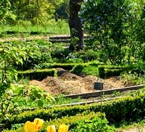
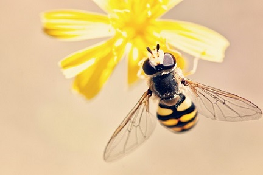

Le Jardin forêt
La permaculture

« La permaculture, c’est une démarche, une philosophie, dont le but est de prendre soin de la nature, des Hommes et de partager équitablement. » Autrement dit : concevoir des cultures, des lieux de vie autosuffisants et respectueux de l’environnement et des êtres vivants. Comment ? En s’inspirant du fonctionnement des écosystèmes et des savoir-faire traditionnels. Une éthique, et beaucoup de bon sens.
Le jardin forêt Copie la forêt naturelle
La forêt naturelle est un écosystème très riche avec une grande biodiversité animale et végétale. En outre, cette matière organique est source d’énergie. Il faut reformer ces écosystèmes forestiers, en les rendant comestibles. Les arbres reconstituent les sols en apportant de l’humus avec leurs feuilles, ce qui est la base de la vie.
Pourquoi le jardin forêt ?
.jpg)
Si on dispose d’un terrain arboré ou d’un terrain nu, où on peut planter des arbres, fruitiers de préférence, tout un chacun peut créer son forêt-jardin. Franck Nathié, fondateur de l’association La Forêt nourricière, donne les conseils suivants(4) : « Au début, les arbres ne donnent pas d’ombre. Il est possible de faire pousser entre eux la plupart des légumes annuels et vivaces, puis peu à peu, l’ombre prend le dessus, passant du plein soleil, à la mi-ombre où petits fruits, pommes de terre, arroches, choux vivaces, etc., peuvent encore être cultivés. Franck Nathié calcule qu’il faut environ 1.000 m2 par personne pour arriver à une certaine autonomie alimentaire, à condition de manger peu de viande, de céréales et de produits laitiers. Il conseille de bien réfléchir à ses besoins et ses objectifs avant de commencer – produire des fruits et des légumes, du bois de chauffage, des plantes médicinales, etc. – et met en garde contre des déséquilibres éventuels (gros surplus de fruits et de noix, manque d’oeufs, de viande, de fruits « tropicaux » comme les tomates, les poivrons, etc.), la nécessité d’une main d’oeuvre qualifiée et disponible et le fait que les produits issus d’un jardin-forêt sont difficilement commercialisables (courte conservation, calibre irrégulier, plantes sauvages ou vivaces difficilement vendables…).
Protègeons les abeilles

L’utilité des abeilles pour l’homme
(Source: Hero remercie pour ces contenus et pour sa collaboration wildBee.ch, l’organisation d’utilité publique qui se consacre à la protection des abeilles sauvages en Suisse)
Pour nous, la pollinisation par les abeilles est d’une importance capitale. Grâce à elles, nous pouvons consommer des aliments riches en vitamines et profiter des fleurs. Sans les abeilles, notre monde serait moins varié et moins coloré. Les abeilles contribuent de manière essentielle à notre qualité de vie.
Un tiers des aliments que nous consommons sont tributaires des abeilles. Sans la pollinisation par les abeilles, les pertes indirectes et à long terme seraient énormes.
La valeur économique mondiale de la pollinisation est estimée à 265 milliards d’euros par an, sans compter les abeilles sauvages.
Les derniers résultats de la recherche ont montré que le rôle des abeilles sauvages en matière de pollinisation avait largement été sous-estimé par le passé. Les abeilles sauvages sont souvent des pollinisateurs équivalents aux abeilles mellifères, plus efficaces ou même uniques pour certaines plantes à fleurs. Elles jouent un rôle particulièrement important dans la pollinisation des variétés fruitières. Les abeilles sauvages sont par exemple de bien meilleurs pollinisateurs de cerises que les abeilles mellifères (HOLZSCHUH et al., 2012). La récolte augmente de 0,8 % avec chaque nouvelle espèce de pollinisateur.
Liens utiles
vous trouverez ici des liens utiles dans le domaine de creation de son propre jardin forêtable
- viste à un jardin forêt
- design d'un jardin forêt
- Bee Careful
- haie nourrissière
- creér son jardin forêt

Le design du jardin forêt
![design]()
Robert Hart : pionnier des forêt-jardins en Europe Suivant les principes de Robert Hart, qui a commencé à cultiver un jardin-forêt à partir d’un verger de 5.000 m2 sur sa ferme à Wenlock Edge dans le Shropshire dans les années 1960, il comporte différents étages de végétation, tels des grands arbres (fruitiers ou à coques), des arbustes ou arbrisseaux (petits fruitiers), des buissons (à baies ou aromatiques) et des plantes herbacées (légumes vivaces, plantes aromatiques, médicinales et utiles). Le système de Hart comprend en fait sept strates :
- La couche canopée, constituée par les arbres fruitiers d’origine ;
- La strate arborée basse : noix et arbres fruitiers sur porte-greffe nain ;
- La strate arbustive : des arbustes fruitiers tels que le cassis et autres baies ;
- La couche herbacée de légumes et d’herbes vivaces ;
- La couche couvre-sol de plantes comestibles qui se propagent horizontalement ;
- La rhizosphère ou dimension souterraine des plantes cultivées pour leurs racines et tubercules ;
- La couche verticale de vignes et autres plantes grimpantes.